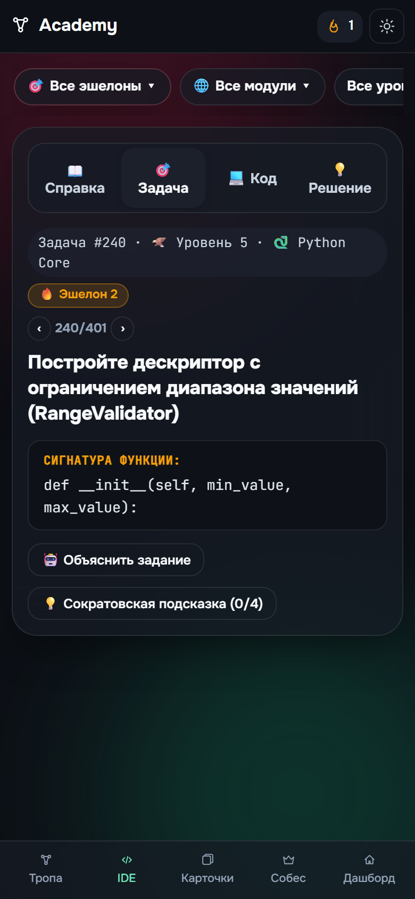
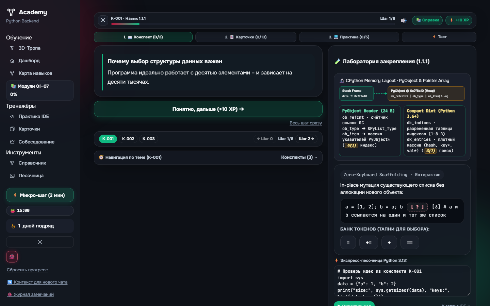
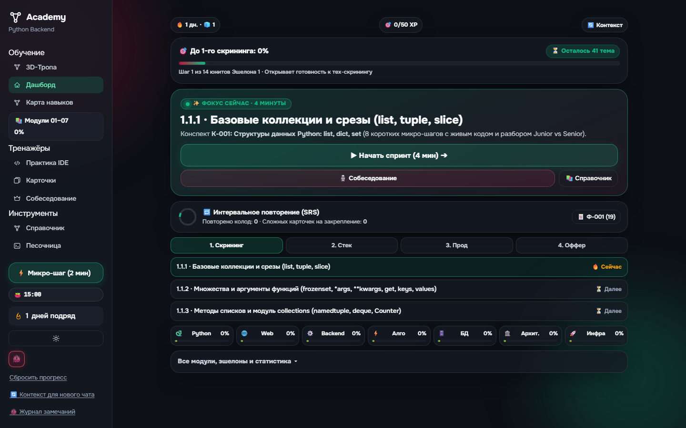
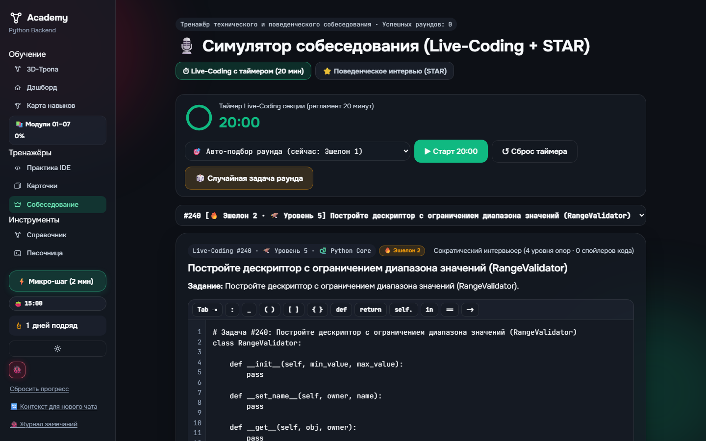
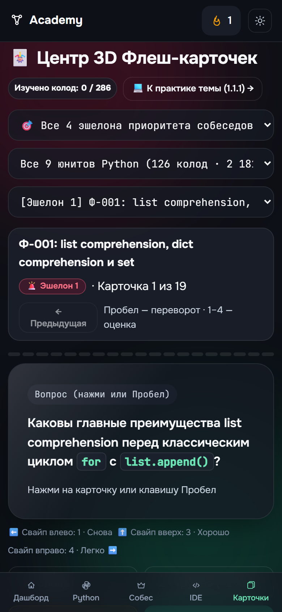
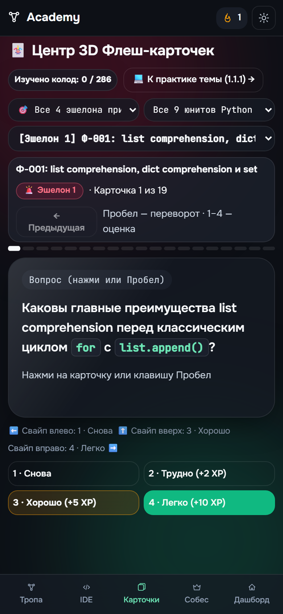
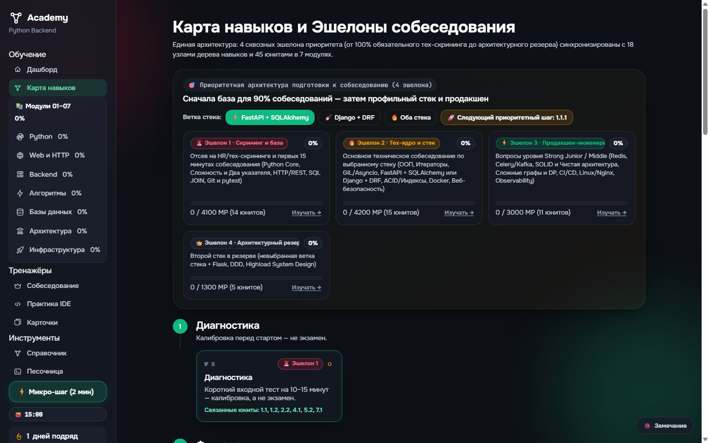
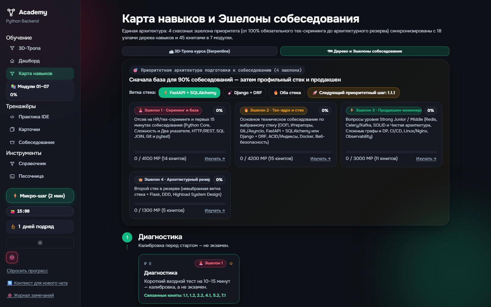
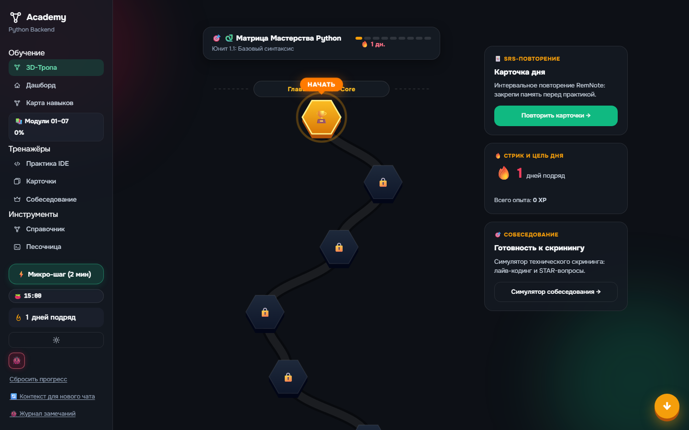
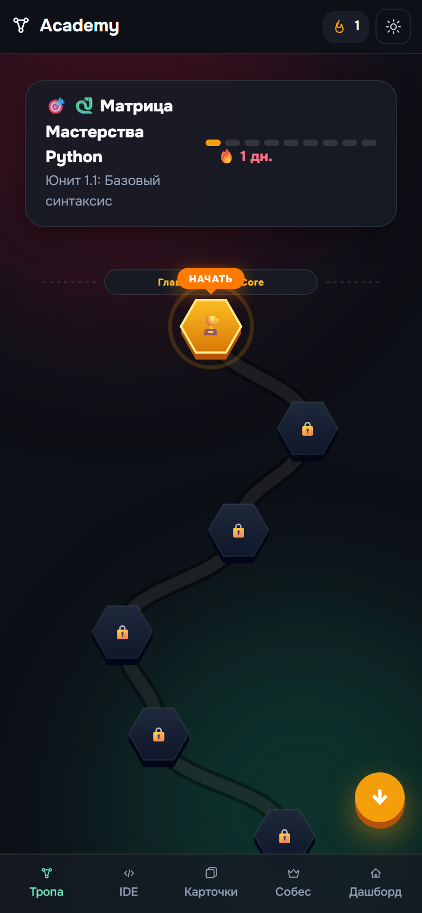

Что изменилось:
- БЫЛО: 5 вертикальных громоздких селекторов заполняли весь экран телефона, скрывая условие задачи и редактор. Кнопки спецсимволов и Tab отсутствовали.
- СТАЛО: Фильтры свернуты в аккуратную горизонтальную ленту чипсов. Над редактором появился липкий Accessory Bar (Tab, :, _, (), [], {}, def, return, ==) с авто-оборачиванием текста, а слева — синхронизированные номера строк.
❌ БЫЛО (Перегрузка селекторами)До правок

✅ СТАЛО (Чипсы + Accessory Bar + Номера строк)После правок

Что изменилось:
- БЫЛО: На широком десктопе карточка занимала узкую полоску сверху, а 70% экрана оставалось пустой черной пустотой (Empty Canvas Void).
- СТАЛО: Полноценный двухколоночный расклад (Split View): слева 60% теории с плавной подачей, справа 40% интерактивной Лаборатории закрепления (живой Scratchpad-редактор, запуск кода и схема памяти CPython).
❌ БЫЛО (Пустота справа на десктопе)До правок

✅ СТАЛО (Split View: Теория 60% + Лаборатория 40%)После правок

Что изменилось:
- БЫЛО: Монолитный сайдбар из 15 неструктурированных пунктов, надпись «1 дней подряд», все 7 модулей спрятаны под спойлер, нет обзора общего прогресса.
- СТАЛО: Сайдбар разбит на группы («Обучение», «Тренажёры», «Инструменты»), стрик грамматически склоняется («1 день», «3 дня»), добавлена постоянная Мини-матрица 7 направлений и круговой SVG-виджет пачки дня SRS.
❌ БЫЛО (Монолитный сайдбар, скрытые треки)До правок

✅ СТАЛО (Матрица 7 треков + SRS виджет + Сгруппированный сайдбар)После правок

Что изменилось:
- БЫЛО: Простые статичные зеленые цифры «20:00», подсказки выдавались обычным сухим блоком текста, вкладка STAR была не проработана.
- СТАЛО: Круговой динамический SVG-таймер с плавной сменой цвета (Изумруд → Янтарь → Бордо), чат-стрим Сократического Tech Lead, и интерактивная 2x2 матрица STAR с таймером питча на 2 минуты.
❌ БЫЛО (Статичный таймер 20:00)До правок

✅ СТАЛО (Круговой SVG-таймер, Чат Tech Lead, STAR-матрица)После правок

Что изменилось:
- БЫЛО: Плавающая кнопка замечания перекрывала кнопку «2 · Трудно» на мобильном, кнопки срезались снизу, отображался только сухой текст «Карточка 1 из 19».
- СТАЛО: Кнопка замечания перенесена в шапку (оверлей ликвидирован), сверху карточки добавлен сегментированный Stories-прогресс-бар, поддержаны свайпы влево/вправо/вверх с фильтрацией блоков кода.
❌ БЫЛО (Кнопка замечания перекрывала кнопки карточки)До правок

✅ СТАЛО (Чистый экран, Stories-бар, свайп-жесты)После правок

Что изменилось:
- БЫЛО: Текст процента «0%» накладывался на цветной бейдж «🚨 Эшелон 1», название Эшелона 3 вылезало за границу карточки.
- СТАЛО: Флекс-структура шапки: слева бейдж, справа отдельный полупрозрачный чипс процента, соединительные коннекторы и плавная анимация переключения стека.
❌ БЫЛО (Наложение процентов на бейджи)До правок

✅ СТАЛО (Ровный флекс-лейаут и чипсы процентов)После правок

Что внедрено по эстетике и философии Coddy:
- БЫЛО: Визуальный шум на тропе: 45 громоздких текстовых подписей прямо в SVG поверх трассы, дублирование заголовка главы («Юнит 1.1: Юнит 1.1...»), кнопка прыжка перекрывала мобильный таббар, в шапке висела лишняя кнопка жука.
- СТАЛО: Нулевой визуальный шум: скрыты подписи нод (чистые 3D-гексагоны), над активным гексагоном добавлен фирменный парящий тултип-бабл «НАЧАТЬ» со стрелкой, на десктопе внедрён 3-колоночный лейаут с правым рейлом (SRS-повторение, стрик/XP, скрининг), на смартфонах кнопка прыжка поднята над таббаром, а мобильный таббар переведён на 5 канонических табов с Тропой во главе.
✅ ДЕСКТОП: 3D Serpentine Path + Правый рейл (#/path)Coddy Path

✅ МОБИЛЬНЫЙ: Чистая тропа без шума + Бабл НАЧАТЬMobile 390px

Что внедрено по мобильной философии Coddy:
- БЫЛО: Длинный скролл всех блоков и визуальный мусор: формулировка задания повторялась дважды (в заголовке и в блоке «Задание: ...»), селекторы перекрывали рабочую область.
- СТАЛО: 4 чистые вкладки [Справка] [Задача] [Код] [Решение], горизонтальная лента свайп-чипсов фильтров, полное устранение дублирования текста условий, лаконичный заголовок с сигнатурой функции и 3D тактильная кнопка запуска.
❌ БЫЛО: Длинный вертикальный скролл всех блоковДо референсов
✅ СТАЛО: 4 вкладки [Справка] [Задача] [Код] [Решение]Coddy 4-Tabs